Reliable fluid path
The cannula, septum and tubing connector had to establish a continuous path for insulin delivery while keeping the connection stable.
A mechanical consumables system designed around the complete user interaction — from insulin reservoir and tubing connection to cannula insertion, securement, disconnection and safe needle handling.
The infusion set is the physical link between the insulin pump delivery system and the user's body. The report defines a complete consumables architecture comprising the cannula housing, tubing connector, needle introducer, adhesive patch and tubing.
The design work was therefore treated as an interconnected system: every connector, snap, guide, grip and protective feature had to work with the neighbouring component and with the user's hands.
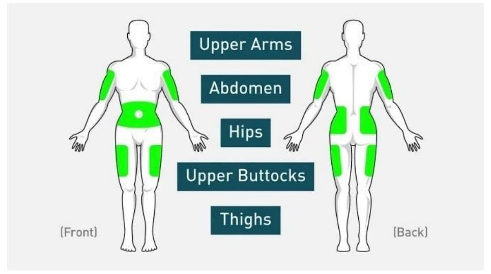
The cannula, septum and tubing connector had to establish a continuous path for insulin delivery while keeping the connection stable.
The report explicitly calls for convenient locking and unlocking at different infusion sites, so the connection could not depend entirely on visual alignment.
Rounded, smooth forms reduce sharp contact points and help the infusion set sit beneath clothing without becoming an uncomfortable protrusion.
Snaps, guides and stoppers were designed together so the connector locks positively but can still be intentionally released by deforming the outer shell.
The report separates the system into modules that can be designed, assembled and replaced independently. This modularity is particularly visible in the tubing connector / cannula housing interface and in the removable needle-protection features.
Holds the cannula and septum, provides the base for the adhesive patch and creates the mechanical interface for the tubing connector.
Caps the cannula housing and creates the bridge from the tubing into the cannula through a guided central extrusion.
Holds the insertion needle centrally and interfaces with the cannula housing during insertion.
Provides a physical barrier around the needle and is designed to be reused as a safe cover after removal from the housing.
The patch anchors the housing to the skin while the transparent blue tubing provides the fluid path and improves air-bubble visibility.
The report shortlisted two square-form concepts for the cannula housing and tubing connector. Both used filleted corners, a central septum interface and snap retention, but the second concept refined the deformation behaviour of the connector.
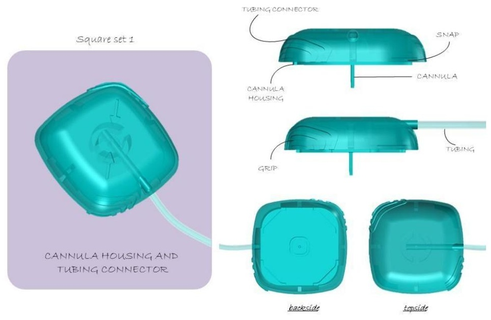
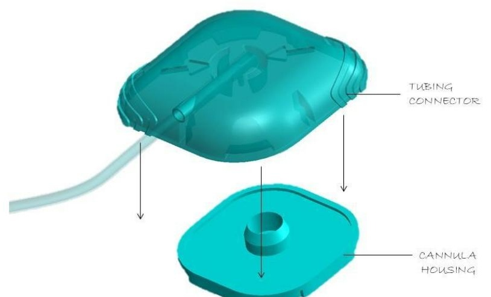
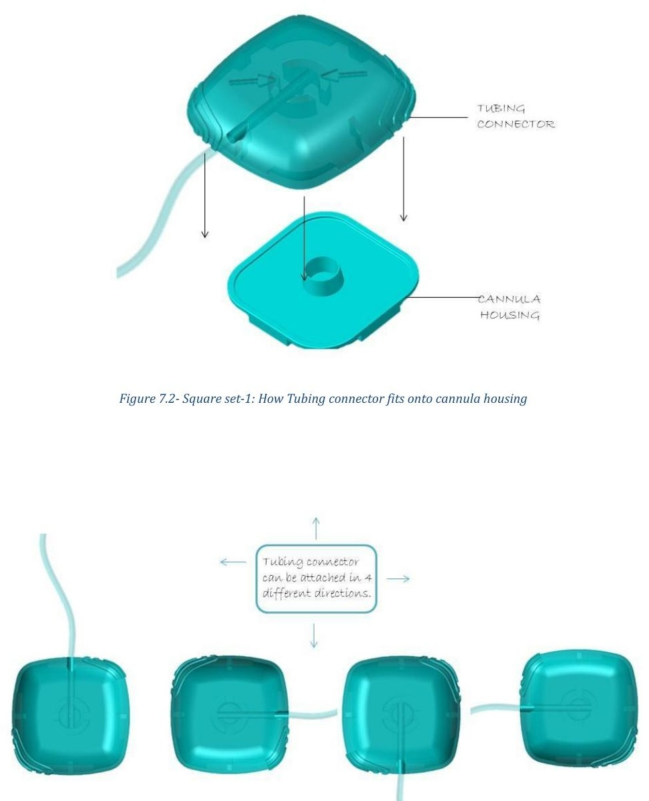
The connector was designed so it could attach to the cannula housing in four different directions. That reduces the need for precise rotational alignment and supports a more intuitive, eyes-free interaction.
Guide → align → engage → snap → lock.
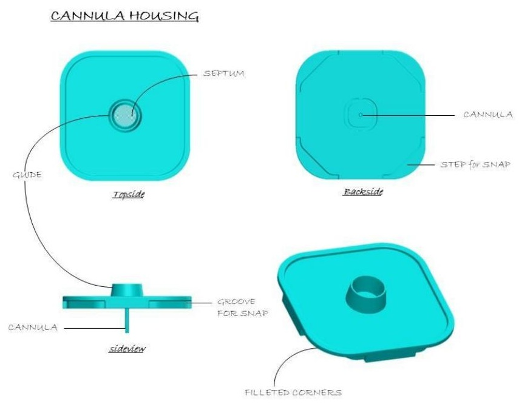
The final interaction was designed around simple hand actions: place, align, press and hear the snap. The same principle is reflected in the needle-protector assembly and removal sequence.
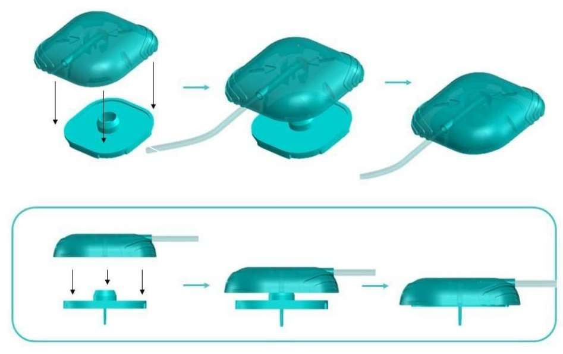
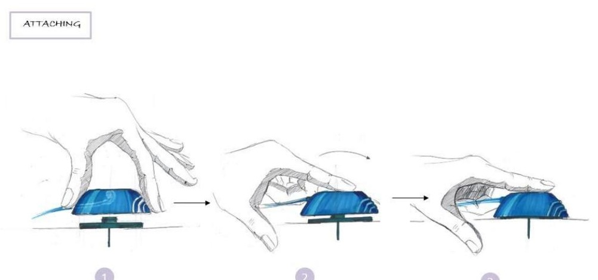
The needle protector was not treated as a static cap. It participates in the use cycle: it protects the needle before insertion, is removed when the set is prepared for insertion, and is then snapped back onto the needle introducer after the needle is safely removed from the cannula housing.
The protector uses a filleted cuboid form with an open underside and interfaces with the introducer through a snug fit. Side flanges provide grip for disengagement while also supporting the locking interface.
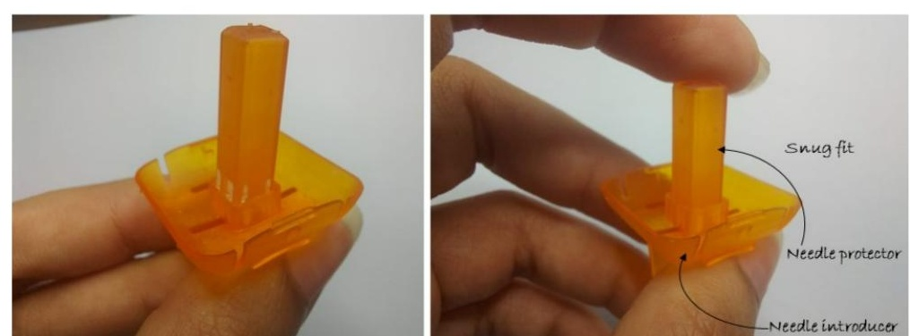
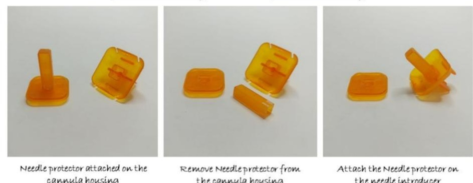
The report documents physical prototype work for the needle-protection interface. The photographs show the parts being handled and fitted together, providing a tangible check of the proposed geometry and snug-fit relationship.
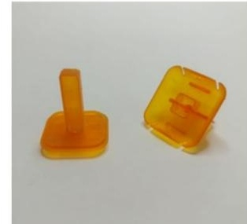
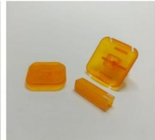
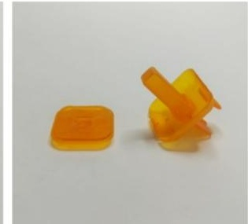
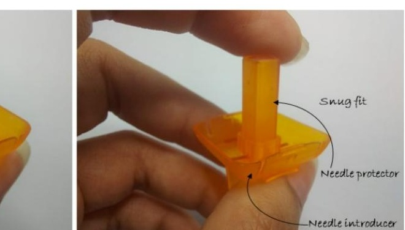
The adhesive patch had to hold the cannula housing securely, be hypoallergenic and avoid causing pain or day-to-day disturbance. The report documents multiple tape trials and evaluation with nine users.
Single-sided microporous rayon nonwoven fabric — selected after the second round of tape trials.
The patch geometry was developed with material utilization in mind. The report specifically considers how the forms can be tessellated to reduce wasted space and material during manufacturing.
Rather than designing an isolated medical-device component, the project connects user interaction, mechanical interfaces, fluid-path continuity, protection, material selection and manufacturing constraints into one consumables ecosystem.